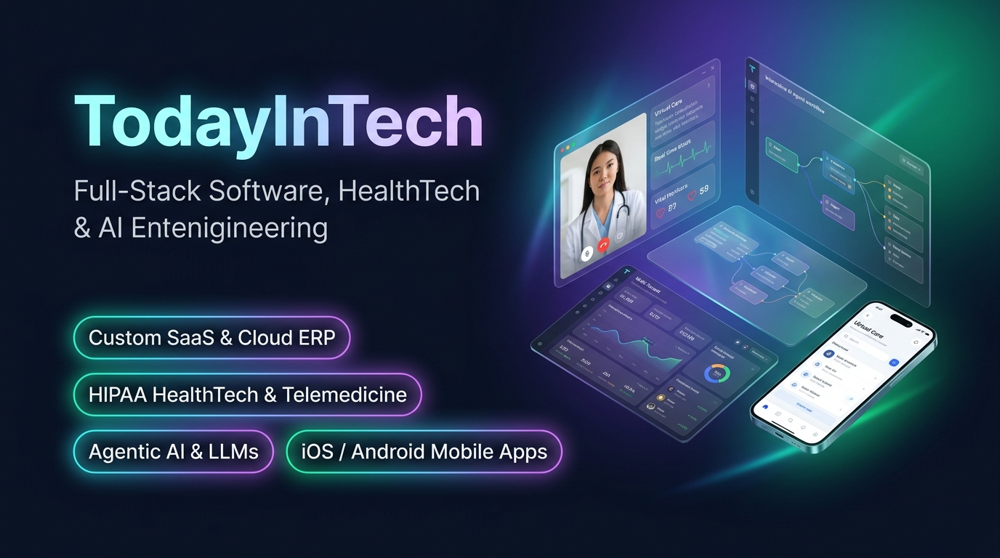
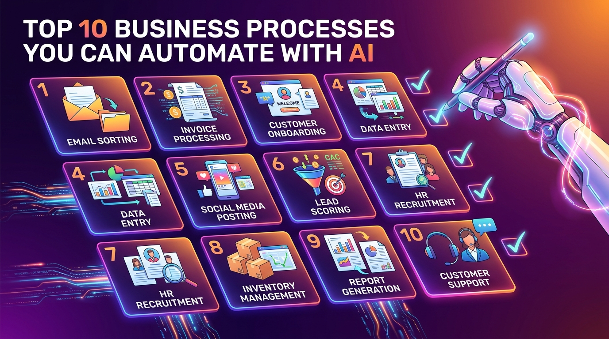
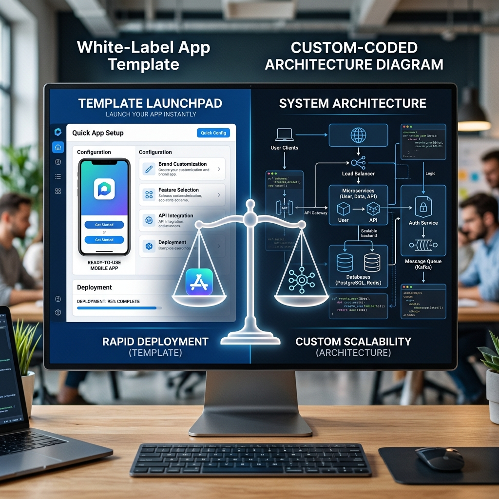
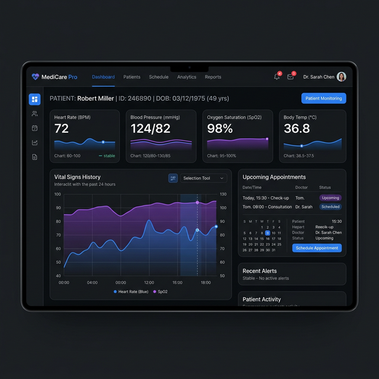
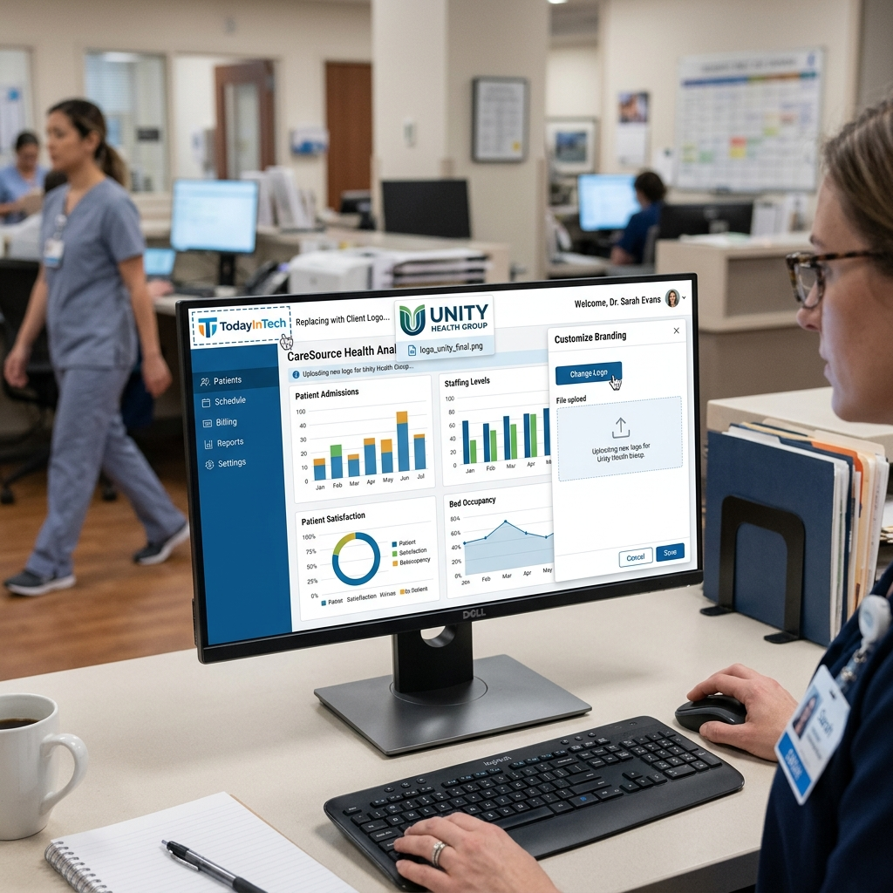
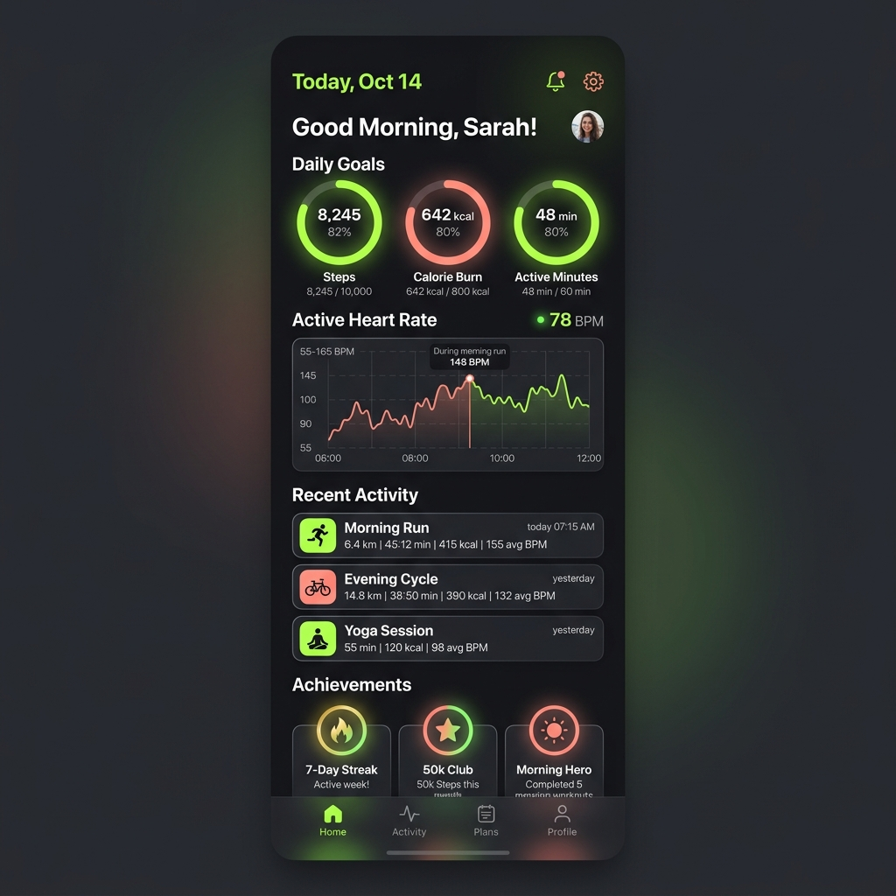

Health Tech Blog
Insights for Digital Health Leaders
Expert guides on telemedicine, EHR integration, HIPAA compliance, white-label software, and the future of healthcare technology.
Featured
We Build Your Software First — You Pay Only After Seeing Your Prototype
TodayInTech is the world's first AI-powered software agency with zero
upfront payment. Any software solution, any industry, 24/7 support — and you only pay after your working
prototype is delivered.
Top 10 Healthcare Software Development Companies in 2026: Competitor Analysis & Selection Guide
Compare ScienceSoft, Arkenea, Chetu, Appinventiv, and TodayInTech on HIPAA compliance, FHIR interoperability, speed-to-market, cost, and Agentic AI capabilities.
Agentic AI Medical Scribe Software Development in 2026: Architecture, FHIR Integration & Cost Breakdown
Complete developer blueprint for ambient AI medical scribes: real-time audio diarization, LLM prompt orchestration, SMART-on-FHIR SOAP note EHR push, and HIPAA compliance.
KMS Healthcare Alternatives: Top 5 Healthcare Software Development Companies (2026)
Compare top KMS Healthcare competitors for digital health software development in 2026. Evaluate TodayInTech, HTD Health, Arkenea, and Bacancy on cost, compliance, speed, and IP ownership.
VSee Alternatives: Top 5 White-Label Telehealth & Virtual Care Platforms (2026)
Compare white-label virtual care software vs. zero-upfront hybrid development. Evaluate TodayInTech, VSee, Healee, Klara, and Doximity on monthly fees and 100% source code ownership.
Agentic AI Ambient Scribing & EHR Automation: The 2026 Guide for Healthcare Providers
Discover how autonomous Agentic AI ambient scribes listen, extract ICD-10/CPT codes, auto-draft SOAP notes, and integrate directly with EHR systems via SMART on FHIR.
Top 10 Healthcare Software Development Companies in 2026 (Competitor Analysis & Cost Breakdown)
Compare the top healthcare software development agencies in 2026. Detailed evaluation of Arkenea, TodayInTech, ScienceSoft, Healee, Bacancy, pricing, and HIPAA compliance.
Agentic AI Clinical Decision Support Systems (CDSS) in 2026: The Complete Developer Guide
A complete developer guide to building HIPAA-compliant Agentic AI Clinical Decision Support Systems with real-time EHR FHIR integration and autonomous reasoning.
Klara Alternatives: Top 5 HIPAA Patient Messaging & Telehealth Partners in 2026
Are you looking to deploy a custom HIPAA patient messaging platform without per-provider subscription fees? Compare the top 5 Klara competitors in 2026.
Athenahealth API Integration & Custom EHR Software Guide (2026)
Master AthenaNet REST & FHIR API synchronization with our 2026 developer guide. Learn how to build custom patient portals and bi-directional EHR sync.
Agentic AI for Prior Authorization & RCM Automation: 2026 Guide
Discover how autonomous multi-agent AI systems streamline clinical prior authorization, automate medical coding, and cut claim denials by 85%.
Healthie Alternatives: Top 5 Telehealth & EHR Platforms in 2026
Are you evaluating Healthie alternatives for your digital health platform? Compare TodayInTech, Practice Better, SimplePractice, and Doxy.me on monthly provider pricing and 100% IP code ownership.
Cleveroad Alternatives: Top 5 Healthcare Software Development Companies (2026)
In-depth comparison of top Cleveroad alternatives for digital health software. Evaluate TodayInTech, Arkenea, ScienceSoft, and Bacancy on zero upfront payment risk, speed, and HIPAA specialization.

How to Build a GLP-1 Telehealth & Medical Weight Loss Platform in 2026
Complete 2026 technical guide for building a Semaglutide/Tirzepatide weight loss SaaS: asynchronous intake, e-Prescribing, Quest/Labcorp lab sync, and Stripe subscription billing.
TEFCA & FHIR R4 Interoperability Compliance Guide for Healthcare SaaS (2026)
Learn how to make your digital health application TEFCA and ONC HTI-1 compliant. Technical deep dive into FHIR R4 APIs, SMART-on-FHIR OAuth 2.0, and QHIN network connectivity.

AI Chatbots vs Traditional Chatbots: The Complete 2026 Comparison
Are you evaluating AI chatbots vs rule-based chatbots for your business? Compare NLP, LLM, cost, deflection rates, and ROI — and find out which delivers real results in 2026.
How WhatsApp Automation Can Increase Your Business Sales in 2026
Are you looking to boost revenue with WhatsApp automation? Learn how WhatsApp Business API, abandoned cart recovery, and automated follow-ups can drive 3x more sales.

Why Every Business Needs AI Automation in 2026 — And How to Get Started
Are you still running your business manually? Discover why AI automation for business is no longer optional in 2026 — and the 8 processes to automate first.

How Much Does It Cost to Build a Custom CRM in 2026? Full Breakdown
Looking for custom CRM development cost estimates? Get a full breakdown from $10K starter to $300K+ enterprise — features, team size, timelines, and hidden costs explained.

React Native vs Flutter in 2026: Which Should You Choose for Your App?
Building a cross-platform mobile app in 2026? Compare React Native vs Flutter on performance, ecosystem, cost, and team requirements — and get a clear recommendation.
How AI is Transforming Healthcare Software in 2026 — Key Applications
Are you building AI-powered healthcare software? Explore how AI transforms diagnostics, EHR documentation, remote monitoring, and drug discovery — with real use cases.

Top 10 Business Processes You Can Automate with AI in 2026
Discover the top 10 business processes you can automate with AI today — from invoice processing and lead scoring to customer support and HR recruitment. With ROI data.
Bask Health Alternatives: Top 5 White-Label Telehealth Platforms (2026)
Compare the best Bask Health alternatives for white-label telehealth software development in 2026. Evaluate TodayInTech, Healee, OpenLoop, and DrCare247 on compliance, cost, and IP ownership.
Wheel Alternatives: Top 5 B2B Telehealth Infrastructure & Staffing Platforms (2026)
Compare the best Wheel alternatives for B2B telehealth infrastructure, software development, and clinician staffing in 2026. Evaluate TodayInTech, OpenLoop, SteadyMD, and Bask Health on cost, compliance, customizability, and IP ownership.

What is Model Context Protocol (MCP)? Connect AI to WhatsApp
A developer's guide to connecting NexBotix's WhatsApp MCP Server to Claude, ChatGPT, and OpenCode for real-time messaging automation.
OpenLoop Alternatives: Top 5 B2B Telehealth Infrastructure Platforms (2026)
Compare the best OpenLoop alternatives for B2B telehealth clinician staffing and infrastructure in 2026. Evaluate TodayInTech, Wheel, Medcase, and Bask Health on cost, compliance, and customizability.
Tellescope Alternatives: Top 5 Digital Health CRM & Patient Portals (2026)
Compare the best Tellescope alternatives for HIPAA-compliant patient CRM and digital engagement portals in 2026. Evaluate TodayInTech, Klara, Mend, and Spruce Health on customizability, price, and EMR integration.
Scopic Alternatives: Top 5 Custom Healthcare Software Developers (2026)
Compare the best Scopic alternatives for custom healthcare software development in 2026. Evaluate TodayInTech, ScienceSoft, Innowise, and Arkenea on compliance, speed, and cost.
Building Security-First Virtual Care Platforms
A deep dive into system architectures, microservices isolation, and automated network auditing protocols for enterprise-level medical SaaS platforms.
Optimizing Client-Side Render Speed in Modern Next.js Applications
Learn advanced performance metrics including INP optimization, route pre-fetching strategies, and bundle splitting tactics for high-traffic Next.js apps.
Why White-Label Software is the Ultimate Growth Hack for Agencies
Discover how agencies leverage white-label software, re-brandable SaaS, and outsourced engineering partnerships to scale their recurring revenue without hiring developers.
Accelerating Three.js Loading Times for 3D Product Customizers
WebGL applications face high bounce rates due to large asset sizes. Learn how to optimize Three.js assets, normal maps, and Draco loaders for instant loading.
The Future of HIPAA-Compliant Telehealth Solutions (2026)
Discover the latest technical innovations and security standards required to build secure, scalable, and fully HIPAA-compliant telemedicine applications in 2026.
How FHIR Interoperability is Transforming Healthcare Software Development in 2026
Learn how HL7 FHIR APIs, EHR integration standards, and secure data exchange are defining the next generation of interoperable medical software in 2026.
DrCare247 Alternatives: Top 5 White-Label Telehealth Platforms (2026)
Compare the best DrCare247 alternatives for white-label telehealth software development in 2026. Evaluate TodayInTech, Healee, and OpenLoop on cost, compliance, and IP ownership.
HIPAA Compliance Checklist for Healthcare App Development (2026)
A comprehensive developer and founder guide outlining the technical, administrative, and physical safeguards needed to build HIPAA-compliant mobile and web applications in 2026.
Optimizing Three.js Draco Compression for 3D Product Configurators
Reduce 3D mesh load times by up to 90%. We show you how to configure Google's Draco compression loader in Three.js for e-commerce WebGL product customizers.
Appinventiv Alternatives: Top 5 Healthcare App Developers (2026)
Looking for a partner to build your health-tech MVP or telemedicine app? We compare Appinventiv alternatives like TodayInTech, Arkenea, HTD Health, and ScienceSoft on cost, compliance, and onboarding risk.
Agentic AI in Healthcare: Automating Prior Authorization & Revenue Cycle Management
Deploy autonomous AI agents to automate prior authorizations, claim submissions, and billing workflows while maintaining strict HIPAA compliance in 2026.
Intellectsoft Alternatives: Top 5 Healthcare Software Development Partners (2026)
Looking for a partner to build your medical platform or EHR system? We compare Intellectsoft alternatives like TodayInTech, ScienceSoft, HTD Health, and Arkenea on cost, compliance, and onboarding risk.
How to Choose an ERP for Multi-Branch Schools: Custom vs. White-Label
Which route is best for your educational group? We compare setup fees, maintenance, time-to-market, and multi-branch scaling between white-label school systems and custom coding.
White-Label Home Care Software vs. Custom ERP Development: 2026 Comparison
Which route is best for your home care agency? We compare setup fees, maintenance costs, time-to-market, HIPAA compliance, and branding control between white-label home care ERPs and custom software development.
Innowise Alternatives: Top 5 Healthcare Software Development Partners (2026)
Looking for a partner to build your medical platform or EHR system? We compare Innowise Group alternatives like TodayInTech, ScienceSoft, HTD Health, and Arkenea on cost, compliance, and onboarding risk.
White-Label Restaurant POS vs. Custom POS Development: 2026 Cost-Benefit Analysis
Which route is best for your food business or SaaS startup? We compare setup fees, maintenance costs, time-to-market, and branding control between white-label POS licensing and custom software development.
Chetu Alternatives: Top 5 Custom Healthcare Software Developers in 2026
Need dedicated developer consistency and HIPAA compliance? We compare Chetu alternatives like TodayInTech, Arkenea, and ScienceSoft on billing risk, domain focus, and IP ownership.
Decentralized Clinical Trials (DCT) Software: The 2026 Development and Compliance Guide
How to design secure, FDA-compliant clinical trial platforms. Explore eConsent workflows, wearable telemetry integration, and HIPAA data segregation.
Healee Alternatives: Top 5 Telehealth & Patient Portals in 2026
Looking for a scalable telehealth or patient portal? We compare Healee alternatives like TodayInTech, SimplePractice, and Doxy.me on customization, compliance, and IP ownership.
Bacancy Alternatives: Top 5 Healthcare Software Development Partners in 2026
Need custom healthcare software development? We compare Bacancy alternatives like TodayInTech, ScienceSoft, and Arkenea on regulatory compliance, risk, and timelines.
ScienceSoft Alternatives: Top 5 Healthcare Software Development Partners in 2026
Looking for a partner to build your medical platform or EHR system? We compare ScienceSoft alternatives like TodayInTech, Arkenea, and HTD Health on cost, compliance, and onboarding risk.
FHIR EHR Integration: The 2026 Interoperability Guide for Health Tech Founders
Explore our developer-focused roadmap to HL7 FHIR integration. Learn to handle EHR developer sandboxes, SMART on FHIR authorization, and HIPAA-compliant data pipelines.
HTD Health Alternatives: Top 5 Healthcare Software Development Agencies in 2026
Looking for the best partner to build your custom digital health platform? We compare HTD Health alternatives like TodayInTech, Arkenea, and Healee on design, speed, and upfront risk.
Hospital-at-Home Software Development: Key Tech Trends Reshaping Care in 2026
Explore the key trends in virtual acute care and hospital-at-home software development: continuous IoT monitoring, AI-driven alerts, and FHIR EHR integrations.
Top 5 Arkenea Alternatives for Healthcare Software Development in 2026
Looking for the best partner to build your health-tech MVP or enterprise software? We compare Arkenea alternatives like HTD Health, Healee, and TodayInTech's zero-upfront hybrid model.
Agentic AI in Healthcare Operations: Automating Clinical Workflows with Autonomous Agents
How healthcare startups and provider networks are deploying autonomous AI agents to automate prior authorization, scheduling, and billing while maintaining strict HIPAA compliance in 2026.

White-Label vs. Custom Healthcare Software: TodayInTech vs. Arkenea, HTD Health, & Healee
Deciding between white-label software, custom development, and TodayInTech's hybrid model. We compare capabilities, time-to-market, costs, and ownership options for US health tech systems.
Telemedicine App Development Cost in 2026: The Complete Budget Guide
How much does a telemedicine app cost to build in 2026? We break down the core cost drivers, engineering resources, and hidden fees, comparing TodayInTech, Arkenea, and Healee.
AI Medical Scribe Software Development in 2026: Complete Guide for US
Clinics
Build a HIPAA-compliant ambient AI scribe for US clinics — architecture,
LLM selection, Epic/Cerner integration, 2026 pricing benchmarks, and a build vs. buy vs. white-label
decision matrix.
AI Clinical Workflow Automation: The $300B Healthcare Opportunity in 2026
Ambient documentation, agentic AI, and prior authorization automation are
reshaping US healthcare. Learn the tech stack, architecture, and compliance requirements to build
HIPAA-compliant AI-powered healthcare software.

Remote Patient Monitoring Software Development in 2026: Complete Guide for US
Healthcare Startups
The US RPM market is surging past $53.6B in 2026. Learn how to build a
HIPAA-compliant RPM platform with IoT device integration, AI-powered alerting, and CMS reimbursement
billing — and how to get to market in weeks, not months.
Agentic AI in Healthcare: What US Health Tech Companies Must Know in 2026
Agentic AI dominated HIMSS 2026 — Amazon, Salesforce, and Microsoft all
shipped AI agent toolkits for healthcare this quarter. Here's how to deploy AI agents on your health
platform while staying HIPAA-compliant.
How to Build a Telemedicine App in 2026: Complete Development Guide
Everything you need to know to build a scalable, HIPAA-compliant
telemedicine platform in 2026 — from architecture decisions to key features, cost estimates, and
technology stack recommendations.

Health White-Label Software: Why Your Business Needs It in 2026
White-label health software lets you launch your branded platform in weeks,
not months. Discover the top benefits, use cases, and what to look for in a white-label healthcare
partner.
EHR vs EMR: Key Differences and Integration Best Practices
Confused by EHR and EMR terminology? We break down the differences, explain
HL7 FHIR integration, and share best practices for connecting your app with major health record systems.
HIPAA Compliance Checklist for Mobile Health App Development
Building a health app? HIPAA compliance isn't optional. This complete
checklist covers technical safeguards, BAAs, PHI handling, audit controls, and everything developers
need to stay compliant.
Pharmacy Management System: Must-Have Features for 2026
A modern pharmacy management system does far more than track inventory.
Explore the essential features — from e-prescriptions to automated refills and insurance verification —
that drive efficiency and patient outcomes.

How Much Does It Cost to Develop a Fitness App in 2026?
From simple workout trackers to AI-powered personal trainers, fitness app
costs vary widely. We break down development costs by feature set, platform, and complexity with real
2026 pricing data.
Top AI Healthcare Technology Trends Reshaping Medicine in 2026
AI is transforming every corner of healthcare — from diagnostic imaging to
drug discovery and personalized treatment. Explore the top trends and what they mean for digital health
product builders.